Project report
Any theme becomes a whole chess set. Play it, then print it.
Every piece on every board is designed and built by Aholo Lux3D, from a single sentence or a photo.
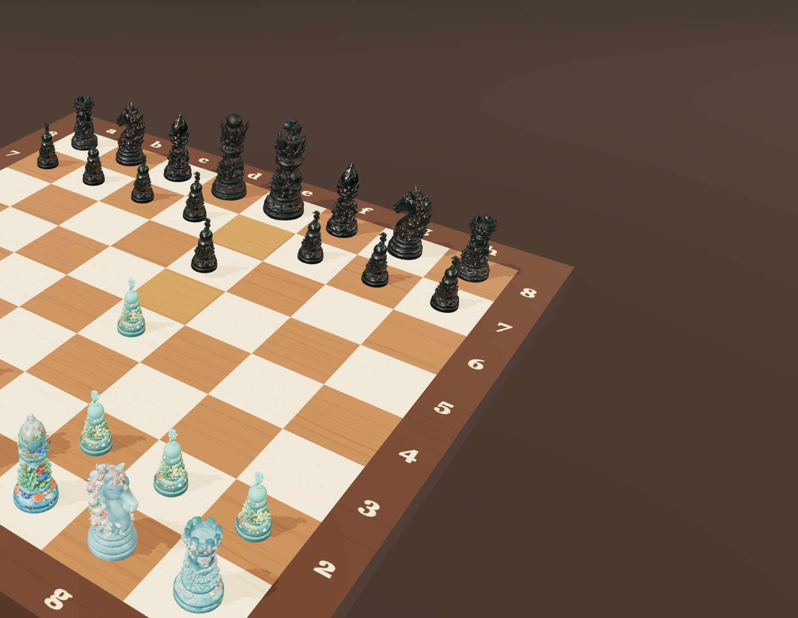
Chess sets are some of the oldest designed objects in the world, and a themed one is a classic gift. Commissioning one means six sculpted pieces that all look like they belong together. That usually takes an artist and a lot of money.
Aholo Lux3D can draw an object and build it in 3D. The question was whether it could do that six times, for six different pieces, and keep them looking like one set.
It can, if the king leads. Lux3D draws the king first, then draws every other piece with the king as its style reference. The material, colours and base carry over; each piece keeps its own chess shape.
The result is a set you can play straight away, against the computer or a friend, and download to 3D-print.
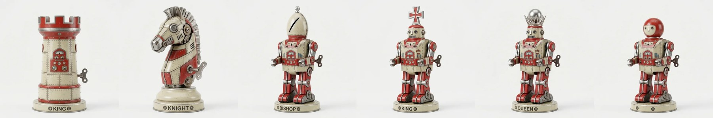
“retro wind-up tin toy robots in red, cream and silver with rivets” — rook, knight, bishop, king, queen, pawn, exactly as Lux3D drew them.
Nobody models, sculpts or textures a single piece. About twelve minutes of Lux3D work per set, measured on the three sets in the gallery. Players can start a game at once: pieces land as they finish.
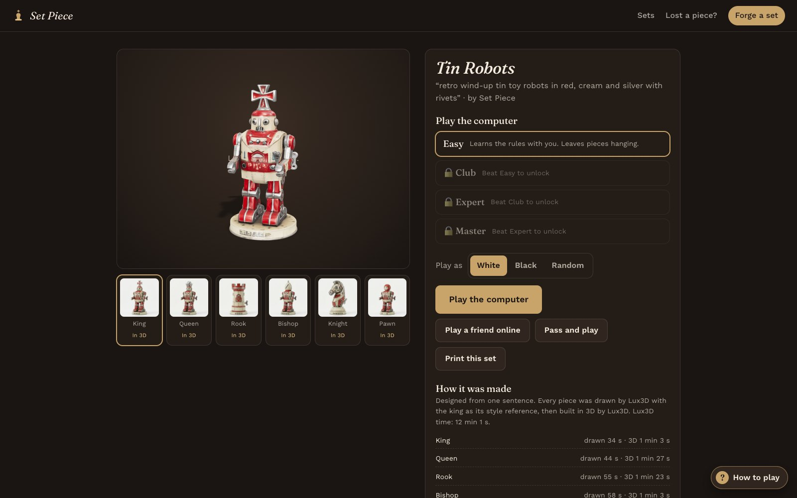
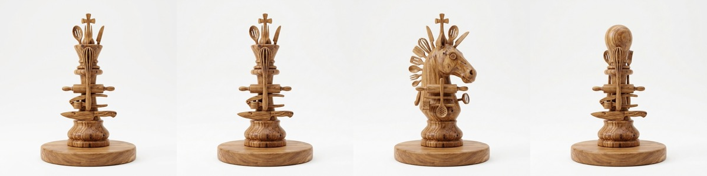
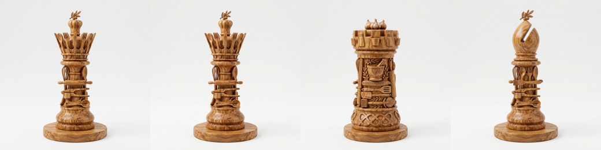
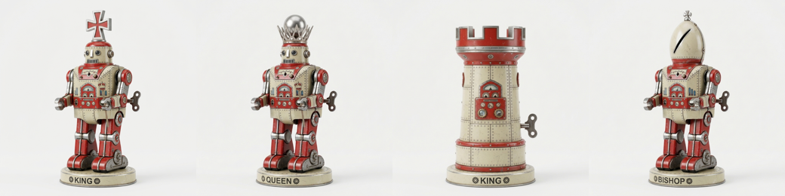
Kitchen Kingdom — “kitchen utensils carved from warm olive wood”
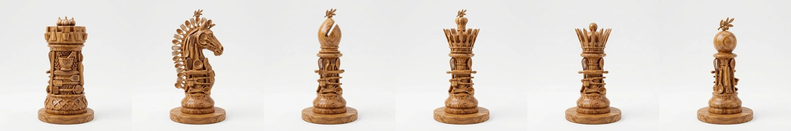
Tin Robots — “retro wind-up tin toy robots in red, cream and silver”
Under the Sea — “coral reef creatures in frosted sea glass and shells”
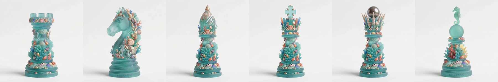
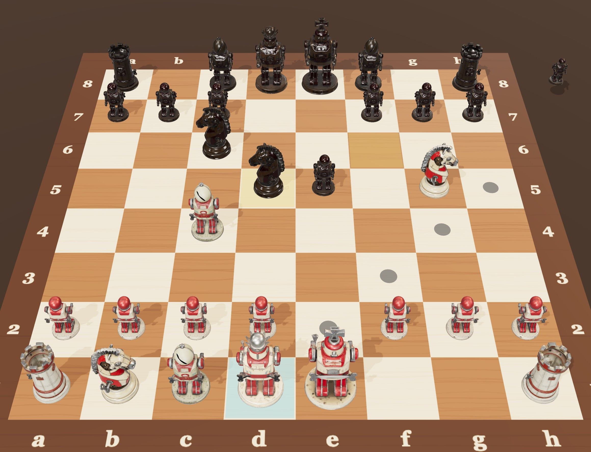
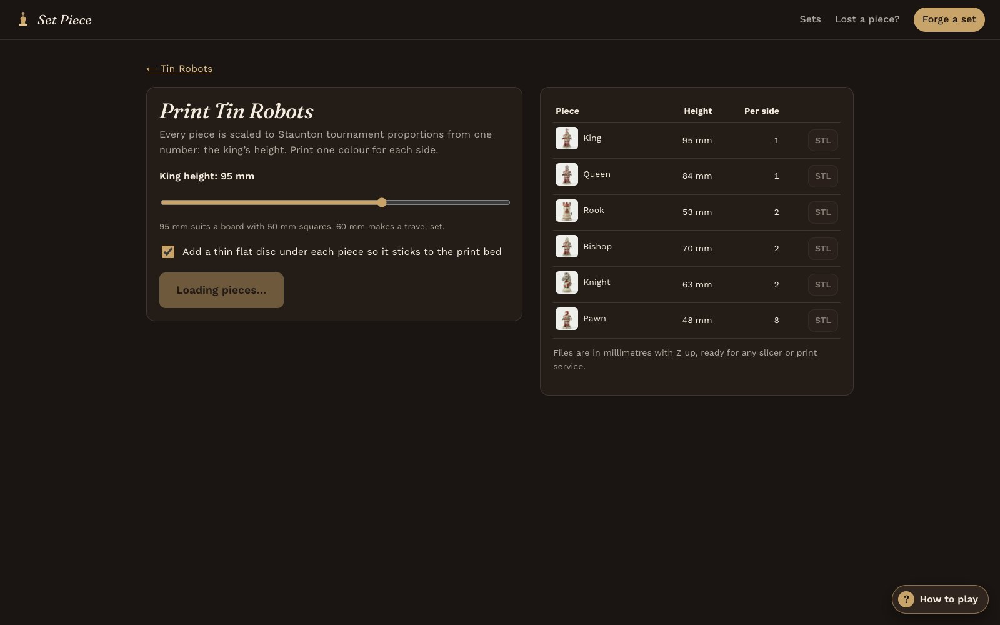
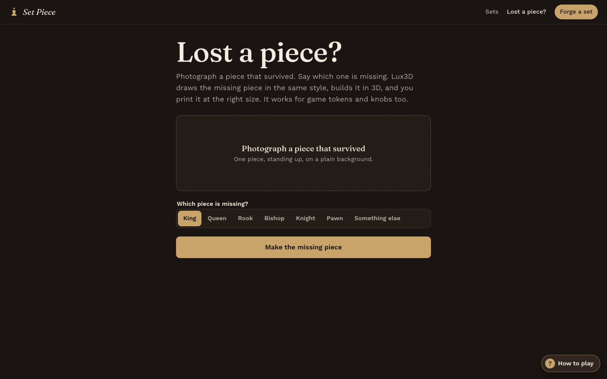
| What we found | Why it mattered | What we did |
|---|---|---|
| Pieces copied the king’s shape. | A set where every piece looks the same is unplayable. | A required silhouette per piece, and a strict king/queen distinction. |
| Each 3D piece arrived at about 9 MB. | A full set would take minutes to load on a phone. | 1K WebP textures, a 24,000-triangle cap and mesh compression: about 0.5 MB each. |
| Our first chess engine took up to 17 s per move. | Nobody waits that long for a computer reply. | Switched to an open-source engine in a background thread: under 0.3 s. |
| Reopening your own online game could hand you the wrong seat. | Your friend would be locked out. | The server now recognises returning players by their seat token. |
| A piece arriving mid-move left a duplicate behind. | Pieces swap in live, so this would happen often. | Redraws wait until every piece has landed. |
| Print export crashed on compressed models. | No print files at all. | Positions are converted to full precision before export. |
Chess players who want a set that is theirs, not a catalogue one.
Gift givers — a family set, a city set, a set of a hobby.
3D-printing hobbyists looking for something worth printing, sized and ready.
Anyone with a piece missing from a set they love.
Still to come: a second, different finish per side from a second photo, and printing services wired straight into the download.
Thirty seconds is enough: open a set, press Play the computer, and move a piece.